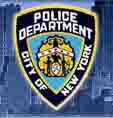

A Polícia de Nova Iorque - NYPD, vem sendo frequentemente usada como referência pelo governo(?) do Rio, no tocante à redução da violência. A cidade da "Grande Maçã" ainda não paga tão bem como Los Angeles por exemplo, mas estão orgulhosos de terem aumentado o salário de seus policiais, e fazem questão de divulgar isso no site oficial.
O salário inicial para quem se forma na academia de polícia é de U$ 35.881 por ano, o que equivale a R$4.716,25 por mês, se consultarmos a ferramenta de conversão de dólar para real aqui. Mas com o recente plano de reajustes, parcelado anualmente, daqui a 5 anos o policial estará recebendo R$ 8.593,91.Neste valor não está incluído o pagamento de horas extras nem adicional por trabalho noturno ou em feriados. Somados estes valores ao salário, mais a ajuda de custo para a compra de uniforme, depois dos 5 anos o policial poderá receber até R$ 10.780,00 por mês.
Além disso todos têm direito à plano de saúde, dental e oftalmológico, uma espécie de FGTS, dentre outras benesses que facilitam a vida do trabalhador, de forma que ele possa se concentrar em sua atividade sem ficar preocupado com a subsistência de sua família. E ainda há um programa de incentivo ao estudo universitário dos policiais, com bolsa e empréstimo a juros baixo. E uma coisa comum à todos os sites policiais americanos que visitei, é a divulgação da boa qualidade de vida de seus funcionários, o futuro promissor, a possibilidade de progredir na vida profissional.
Consegui encontrar ainda uma prova para admissão, com conteúdo totalmente diferente do que costuma ser cobrado nos concursos daqui. As questões são voltadas para habilidades e conhecimentos voltados à prática do efetivo exercício da função de policiamento, patrulhamento, que é o trabalho inicial e obrigatório de todos que desejem ser policiais. Não há como entrar "por cima", na polícia dos EUA você começa de baixo, e só após adquirir experiência pode progredir aos postos mais altos, podendo chegar a chefe de polícia.
Para ver como é a prova, entre neste link. Obviamente você tem que saber ler em inglês para entender as questões, mas achei tão interessante, diferente, que prometo traduzir algumas e colocar em um novo post. O processo para contatação é longo e árduo, passa por exames médicos, psicológicos, orais, investigação social, entrevistas, etc. Para ser policial em NY não é preciso só estar desesperado por um emprego, é preciso querer ser policial, acima de tudo.
Por fim, além de todo o bom suporte colocado à disposição dos policiais, eles valorizam o profissional, o ser humano. Mantém, inclusive, uma seção do site oficial chamada Memorial, onde estão listados todos os oficiais mortos em serviço desde 1849! Ano passado por exemplo 6 policiais foram assassinados enquanto cumpriam seus deveres.